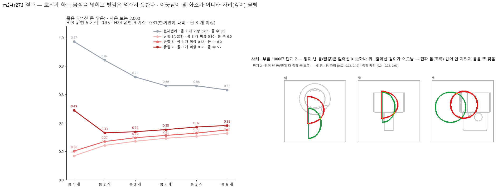

실험 m2_tr0273_h023_넓힘
목표 G1.2 view 모음 → 파츠별 CAD code(CadQuery · 그 전 「3 면도 → 파츠별 CAD」 · 지금 M2 는 위 · 앞 · 옆 고정 세 장만 받음 → 아무 각도 N 장으로 바꿀 것 · 11-20) · G1 첫 제품 — 피규어 · 메카 사진 여러 장 + 치수 → 숨은선 3 면도 + 파츠별 CAD · G0 임의의 이미지 → CAD 코드 · 빌린 가정 3: 생성기기하 · 정답3D · 정사영 · 갚는 계획: 나누는 방법 비교(벗겨내기 · 노출 차 싸게 막기) · 정답 3면도 · 생성기 부품 — 고른 방법은 view 입력 · m1 view · 원화CAD짝 시험지로 다시 봄 · 목표 시험지 값: 안 잼 (!)
벗겨내기의 노출 차를 싸게 막아 — 시험 때 찾은 몸 선을 흐리게 할 굵힘을 넓히면(5 · 9 칸) — 망이 낸 몸 캔버스로도 처음 보는 부품의 몸을 한꺼번에보다 잘 나누나?
판정 · H23 · H24 기각(굵힘 5 -0.35 · 9 -0.31) — 시험 때 흐리게 하는 굵힘을 넓혀도 벗김은 멈추지 못함(몸 5.6 ~ 6 개) · 사례: 망이 낸 몸의 깊이 자리가 가운데로 몰려 위 · 옆 그림에서 크게 어긋남 → 진짜 몸 선이 안 지워져 같은 몸을 또 찾음 · 노출 차의 속은 몇 화소 어긋남이 아니라 자리 몰림(짐작 · 사례 하나) · 다음: 찾은 몸의 자리 · 크기를 그림 선에 맞춰 잰 뒤 흐리기(벗김 + 맞춰 재기)
| 가설 | 주장 | 결과 | 근거 |
|---|---|---|---|
| H23 | 흐리게 하는 굵힘을 5 칸으로 넓히면 어긋난 둘레가 흐려져 벗김이 멈추고, 처음 보는 부품 몸 3 개 이상을 한꺼번에보다 잘 나눈다 | 기각 | 몸 3 개 이상 묶음 F 한꺼번에 0.674 · 굵힘 3 0.298 · 5 0.321 · 9 0.36 · 예측 몸 수 평균 한꺼번에 3.51 · 굵힘 3 6.0 · 5 5.96 · 9 5.65 · 사례(판정 뒤 · 부품 100067 단계 2): 망이 낸 돔 선 중 정답 돔 선 1 화소 안 위 0.07 · 앞 0.22 · 옆 0.07 · 망 자리 y 0.02 대 정답 -0.22 |
| H24 | 흐리게 하는 굵힘을 9 칸으로 더 넓히면 벗김이 멈추고, 처음 보는 부품 몸 3 개 이상을 한꺼번에보다 잘 나눈다 | 기각 | 몸 3 개 이상 묶음 F 한꺼번에 0.674 · 굵힘 3 0.298 · 5 0.321 · 9 0.36 · 예측 몸 수 평균 한꺼번에 3.51 · 굵힘 3 6.0 · 5 5.96 · 9 5.65 · 사례(판정 뒤 · 부품 100067 단계 2): 망이 낸 돔 선 중 정답 돔 선 1 화소 안 위 0.07 · 앞 0.22 · 옆 0.07 · 망 자리 y 0.02 대 정답 -0.22 |
분석
한 줄로
물음: 벗겨내기는 시험 때 망이 낸 몸으로 흐리게 하면 선이 남아 멈추지 못했다. 흐리게 하는 굵힘을 넓히면(5 · 9 칸) 멈추고, 처음 보는 부품을 한꺼번에보다 잘 나누나?
답: 아니다(H23 · H24 기각). 몸 3 개 이상 묶음 F 가 한꺼번에 0.67 대 굵힘 5 0.32 · 9 0.36 이다. 넓히면 조금 나아질 뿐 여전히 몸을 5.6 ~ 6 개씩 낸다. 사례를 보니 어긋남은 몇 화소가 아니었다. 망이 낸 몸의 깊이 자리가 가운데로 몰려, 위 · 옆 그림에서 진짜 몸과 크게 어긋났다.
왜 이 실험을 했나
m2-tr272 에서 정답 캔버스면 처음 보는 부품도 멈췄다(0.995). 시험 때 캔버스가 조금 어긋나 생긴 일이라면, 흐리게 하는 둘레를 넓히는 것만으로 싸게(학습 없이) 막을 수 있을지 봤다. 식은 H20(병목은 나누기)의 주장을 열린 칸으로 써서 가설 나무에 이었다.
바꾼 것 하나
시험 때 찾은 몸 선을 흐리게 할 때 굵히는 칸: 3(학습 때 · tr271) → 5(H23) · 9(H24). 망 · 시험지는 tr271 그대로다. 판정 셈은 넘치게 낸 몸을 깎는 묶음 F 로 바꿨다(tr271 셈의 약점).
결과

| 처음 보는 3,000 · 몸 3 개 이상 | 묶음 F | 예측 몸 수 평균 |
|---|---|---|
| 한꺼번에(대조) | 0.67 | 3.5 |
| 벗김 굵힘 3(tr271) | 0.30 | 6.0 |
| 벗김 굵힘 5(H23) | 0.32 | 6.0 |
| 벗김 굵힘 9(H24) | 0.36 | 5.7 |
| 가설 | 결과 | 판정선 | 판정 |
|---|---|---|---|
| H23 굵힘 5 - 한꺼번에 | -0.35 [-0.36, -0.34] | ≥ 0.05 지지 · 위 < 0.02 기각 | 기각 |
| H24 굵힘 9 - 한꺼번에 | -0.31 [-0.32, -0.30] | ≥ 0.05 지지 · 위 < 0.02 기각 | 기각 |
Lean: 두 가설 모두 기각이 칸(pred · 결과 전에 적음)을 채워 「아님」 이 닫힌다. 열린 칸 bottleneck · link 는 H20 의 주장을 쓴다(H20 이 닫히면 함께 닫힘).
왜 이렇게 나왔나
확인한 것
- 굵힘을 넓히면 몸을 조금 덜 내고(6.0 → 5.7) F 가 조금 오른다(0.30 → 0.36). 한꺼번에에는 한참 못 미친다.
- 사례(판정 뒤 · 부품 100067 · 사용자 「돔을 찾은 건지 모르겠는데?」): 망이 낸 돔은 종류와 앞 모양은 맞지만, 깊이 자리 y 가 0.02(정답 -0.22)로 가운데에 몰렸다. 망이 낸 돔 선 중 정답 돔 선 1 화소 안은 위 0.07 · 앞 0.22 · 옆 0.07 이다. 진짜 돔 선이 안 지워져 돔을 세 번 찾았다.
짐작 (아직 확인 안 함)
- 노출 차의 속은 「몇 화소 어긋남」 이 아니라 자리 숫자가 가운데로 몰리는 것(m2-tr263 의 몰림과 같은 꼴)이다. 사례는 하나뿐이라 전체에서 재야 한다.
한계
- 학습 없이 시험 굵힘만 바꿨다 — 망은 굵힘 3 으로 배운 망이다.
- 사례 하나로 본 원인(자리 몰림)은 판정 뒤에 본 것이다.
배운 것과 다음
흐리게 하는 둘레를 넓히는 것으로는 노출 차를 못 막는다. 망이 낸 몸의 자리(특히 앞에서 안 보이는 깊이)가 몰려 있다.
- 망이 낸 몸의 자리 오차를 처음 보는 3,000 전체에서 재 「자리 몰림」 이 일반인지 확인한다(싼 셈).
- 맞다면, 찾은 몸의 자리 · 크기를 그림 선에 맞춰 잰 뒤 흐리게 한다(벗김 + 맞춰 재기 · 길 다의 맞추기를 몸 하나씩).
실험 기록
- 카드(돌리기 전 커밋 dc5c7336 · 식 · 판정식 · Lean 증명 나무 하네스/lean/증명나무_tr0273.H23 · H24.png) · 넓힘273.py(흐름 · 흐름2 · 재기 · 그림) · 벗김271.py(추론 굵 인자) · 잼.json · 흐름.png(다시 그림 · 사용자 「차이가 안 보여」) · 결과.png · 돔세장.png · 돔겹침.png · 원본 out/설명/캐드부품/모델271(추론_시험_굵5 · 굵9)